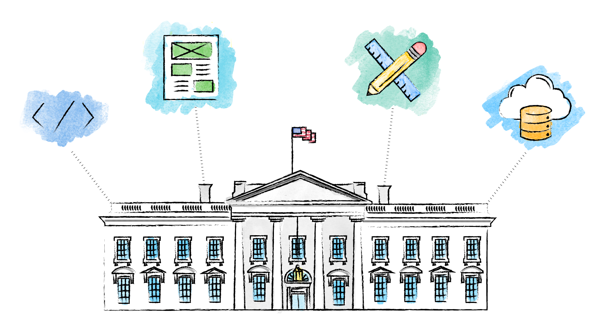
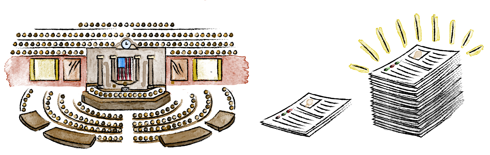

Our Story

Every day, millions of people interact with the American government. We apply for Social Security and small business loans. We look for health insurance and financial aid. But too often, these interactions are frustrating because of outdated tools and systems.
What if interacting with government services were as easy as ordering a book online? The challenges behind HealthCare.gov brought this question to the forefront, changing government’s approach to technology.

The U.S. Digital Service is a startup at the White House, founded in August of 2014 to bring best practices in technology and design to government. We planned to hire ten people for three projects: modernizing immigration, Veterans’ benefits, and HealthCare.gov.
During the 2015 State of the Union address, we launched an online application to join the team. We worried if ten people would even apply. 1000 did. We quickly went to work with a simple strategy:

What was once one startup at the White House is now a networks of teams working across agencies:

We’re proud of the products we’ve built. But we’re equally as proud of the team we’ve assembled.
Over 50% women
151 people and growing

From 12 states (and Puerto Rico)
Emoji, post-its, and sticker enthusiasts
And we are are bound by a shared mantra “No problem of human destiny is beyond human beings”- JFK
Our Values
How we work is as important as what we do.
1. Hire and empower great people.
Technology alone doesn’t change things — it’s the people who push our mission forward. Strong EQ, compassion, and tenacity are just as important as being a great technologist.
2. Find the truth. Tell the truth.
We expect our people to be humble, not quiet, and challenge the status quo wherever data supports it. To borrow from Senator Daniel Patrick Moynihan: “Everyone is entitled to their own opinion, but not their own facts."
3. Optimize for results, not optics.
We work for the people — not credit, prestige, or headlines. This means tackling the hard stuff, even when success isn’t guaranteed.
4. Go where the work is.
By working shoulder to shoulder with agencies, we’re able to inspire change. Transforming government is not up to the Digital Service. It’s up to all of us, together.
5. Create momentum.
The American people need better digital services, today. We work with a bias for action, focusing on delivery above all else.
6. Design with users, not for them.
To deliver products and services that provide value to users, it’s essential that we experience their experiences. The best products and services aren’t created behind closed doors.